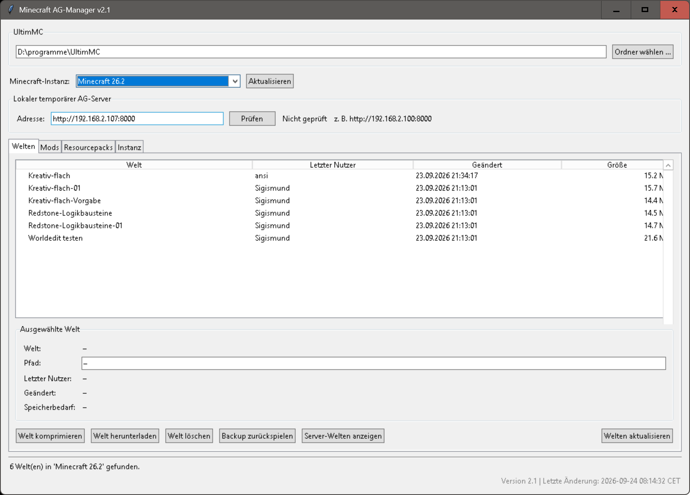
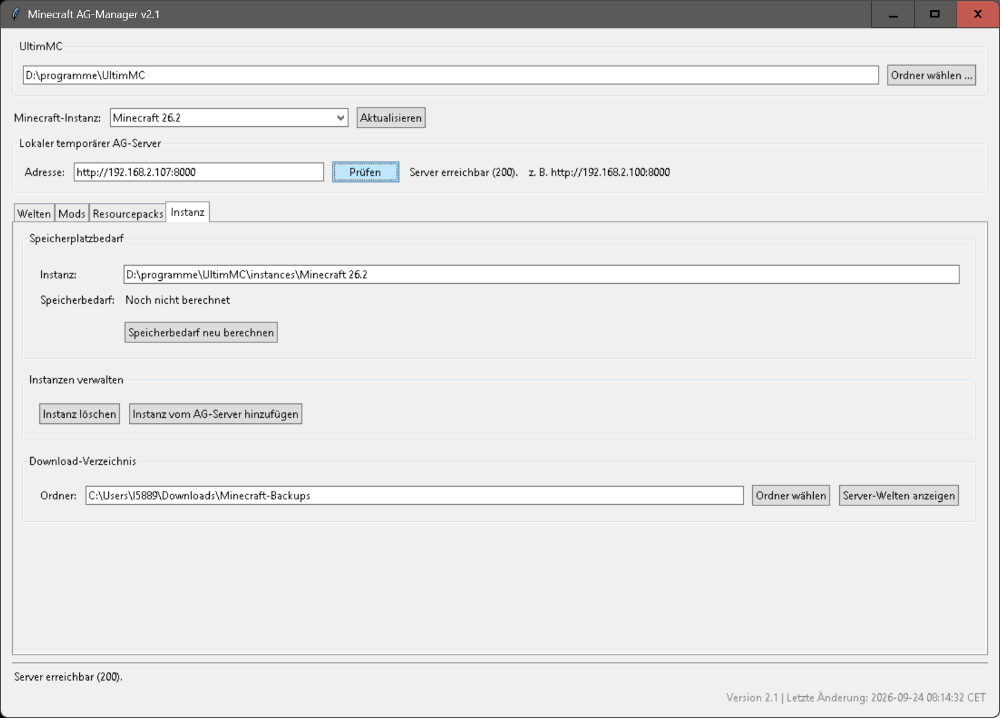
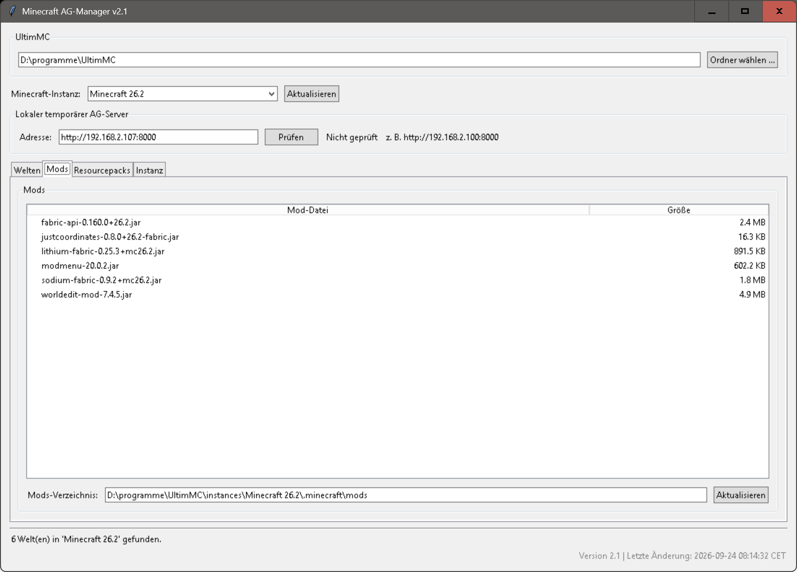
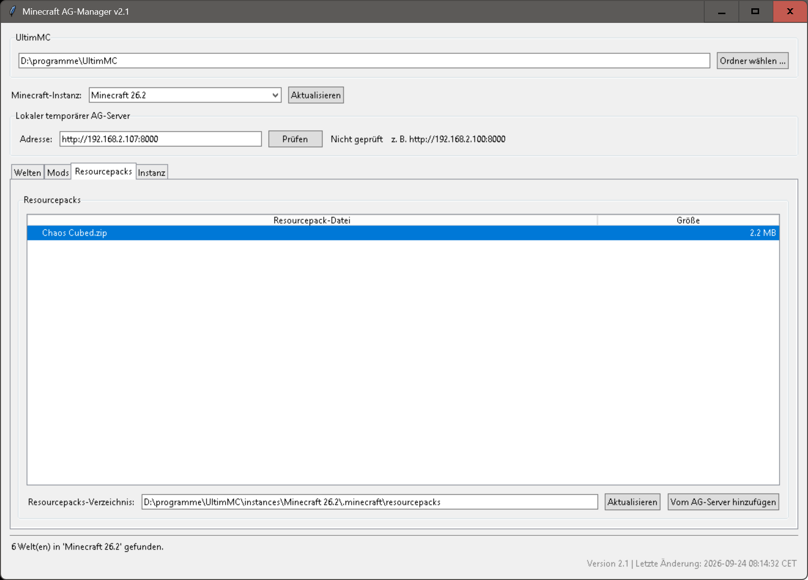

Welten
Vorhandene Welten anzeigen, sichern und vom AG-Server herunterladen.
Das Programm ag_manager_gui_v2.py ist ein grafischer Minecraft AG-Manager für Windows. Es unterstützt die Verwaltung von Minecraft-Instanzen, Welten, Backups, Mods und Resourcepacks für eine Schul- oder Arbeitsgemeinschaft.
Es findet lokale UltimMC-Instanzen, zeigt deren Welten an und ermöglicht typische Verwaltungsaufgaben: Welten komprimieren, löschen, sichern, aus Backups wiederherstellen und vom AG-Server herunterladen. Dabei nutzt es einen lokalen AG-Server, zum Beispiel http://192.168.2.107:8000, um gepackte Welten, Instanzen und Resourcepacks bereitzustellen.
Zusätzlich kann das Programm komplette Minecraft-Instanzen verwalten: vorhandene Instanzen löschen oder gepackte Instanzen vom AG-Server herunterladen und in den lokalen UltimMC-Ordner entpacken. Auch Resourcepacks können pro Instanz vom Server geladen und in das passende .minecraft\resourcepacks-Verzeichnis eingefügt werden.
Für Sicherungen erstellt das Programm ZIP-Backups von Welten. Diese können lokal gespeichert, auf den AG-Server hochgeladen oder per LernSax-E-Mail verschickt werden. Bereits vorhandene Welten, Instanzen oder Resourcepacks werden nicht ungefragt überschrieben, sondern erst nach Bestätigung ersetzt.
Kurz gesagt: Das Programm dient dazu, die Minecraft-AG zentral mit vorbereiteten Instanzen, Welten, Backups, Mods und Resourcepacks zu versorgen und lokale Schüler-Installationen einfacher zu warten.
Der Minecraft AG-Manager bietet folgende Funktionen:

Vorhandene Welten anzeigen, sichern und vom AG-Server herunterladen.

Minecraft-Instanzen anzeigen, löschen und vom AG-Server herunterladen.

Mods für die verwalteten Minecraft-Instanzen bereitstellen.

Resourcepacks auswählen und passend zur Instanz installieren.